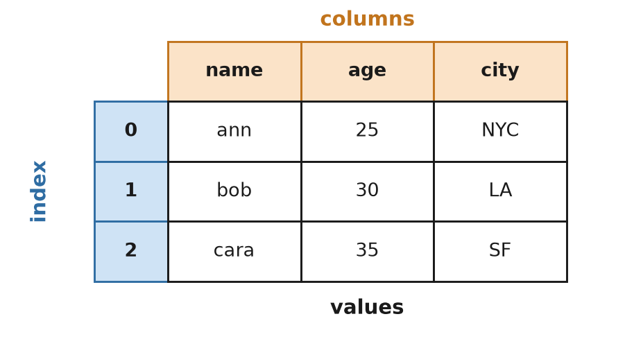
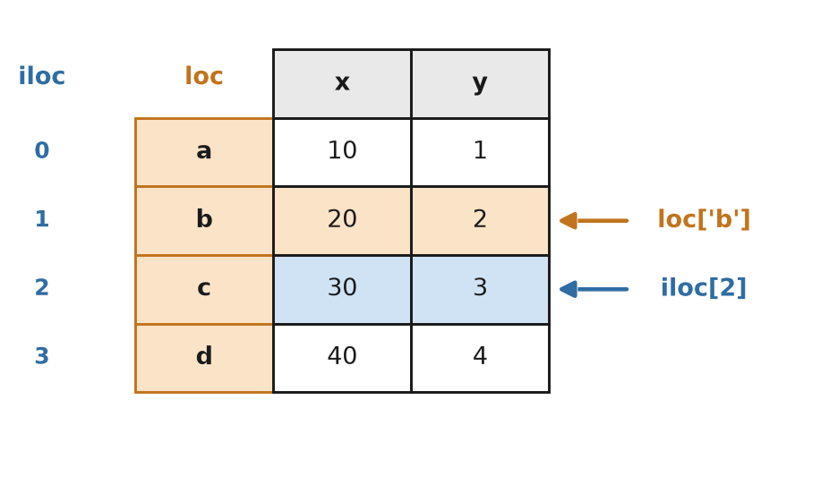
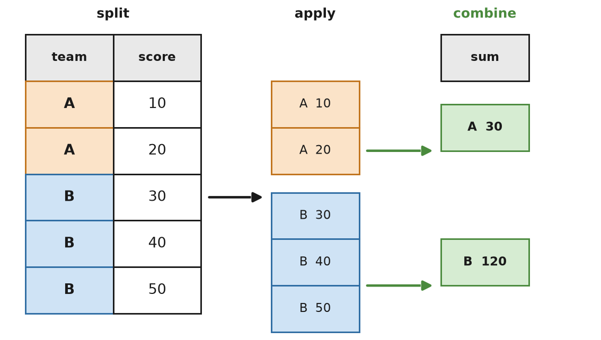

هفته دوم · بخش ۲

جدولهای داده در پایتون
Python Data Analysis Library
مستندات رسمی: pandas.pydata.org
گیلانمهارت · یادگیری ماشین
معرفی
pandas چیست؟
pandas کتابخانه اصلی کار با دادههای جدولی در پایتون است. هر ستون یک آرایه NumPy با برچسب است، و کنار هم یک جدول کامل با نام سطر و ستون میسازند.
این کتابخانه در سال ۲۰۰۸ توسط Wes McKinney برای تحلیل دادههای مالی نوشته شد. نام آن از اصطلاح «panel data» در اقتصادسنجی گرفته شده، اصطلاحی برای دادههایی که هم در طول زمان و هم بین واحدهای مختلف جمعآوری شدهاند.
pandas روی NumPy ساخته شده است: لایهای که داده خام و شلوغ را
به جدولی تمیز، آماده برای مدل، تبدیل میکند.
CSV / Excel
SQL
scikit-learn
matplotlib
هفته دوم · pandas
مفهوم کلیدی
آناتومی DataFrame

- columns: برچسبها در بالای جدول
- index: برچسبها در کنار جدول
- values: خودِ شبکه اعداد
هر انتخابی در ادامه، فقط «چند ستون و چند برچسب از ایندکس را انتخاب کن» است.
هفته دوم · pandas
مفهوم کلیدی
.loc در برابر .iloc

.loc → select by label
.iloc → select by position
.iloc → select by position
وقتی ایندکس یک بازه ساده 0, 1, 2, ... نباشد، این دو با هم فرق میکنند. همین تفاوتی است که باید در ذهن بماند.
هفته دوم · pandas
مفهوم کلیدی
groupby: تقسیم، اعمال، ترکیب

بدون groupby، محاسبه جمع هر گروه یعنی حلقهزدن روی سطرها و انباشتن دستی در یک دیکشنری کلیددار.
Split → Apply → Combine
هفته دوم · pandas
مرجع
مستندات و فهرست مطالب
00Introduction
01Series and DataFrames: creating and loading
02Inspecting a DataFrame
03Selecting data: loc, iloc, and boolean masks
04Adding, transforming, and dropping columns
05Sorting, counting, and summarizing
06Handling missing data
07groupby: split-apply-combine
08Combining DataFrames: concat and merge
09Reshaping: pivot and melt
10From pandas to the ML stack
11Summary
12Exercises
هفته دوم · pandas